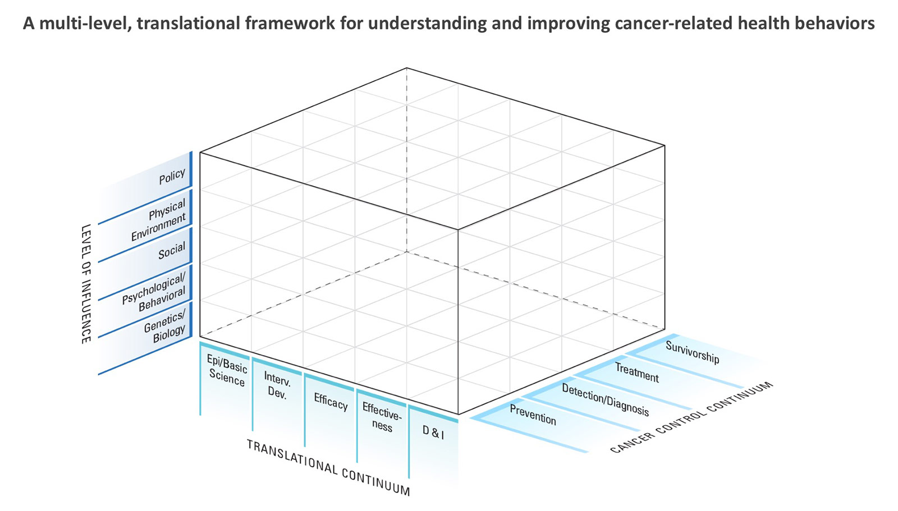

NCI’s Health Behaviors Research Branch (HBRB) Strategic Plan for Fiscal Years 2018-2022 - DRAFT
Introduction
Health-related behavioral risk factors, including tobacco use, physical inactivity and sedentary lifestyle, overweight and obesity, eating an unhealthy diet, lack of sun protection, and nonadherence to cancer-related medical regimens, are important contributors to cancer risk, progression, and outcomes. In fact, studies show that more than 50 percent of cancers could be prevented by adopting a healthy lifestyle (Colditz, Wolin and Gehlert, 2012). Thus, understanding and effectively intervening on cancer-related risk behaviors are essential in efforts to reduce cancer risk and disease burden.
Improving cancer-related risk behaviors depends on our ability to understand the complex array of influences on human behavior – from biological, psychological, and interpersonal factors to sociocultural and environmental influences – that affect a person’s ability to initiate and maintain a healthy lifestyle over time. By better understanding these influences, we can develop, test, and implement more effective policies and interventions to favorably alter cancer risk behaviors and ultimately improve health outcomes.
The Health Behaviors Research Branch (HBRB) has developed a strategic plan to guide the design and implementation of optimal strategies to improve cancer risk behaviors and to understand and evaluate the influence of programs and policies at multiple levels and across all points on the cancer control continuum. Branch members engaged in a yearlong process that included four strategic visioning retreats and a series of related activities. This document summarizes the plan, and it includes:
- HBRB’s vision and mission, goals, and objectives;
- a framework to help organize HBRB-relevant goals and priorities; and
- priority areas to advance the strategic goals and objectives over the next five years.
Strategic Plan Elements
Vision: A world in which individuals, families, and communities engage in healthy lifestyles to prevent cancer, improve treatment outcomes, extend life, and optimize health and well-being.
Mission: To support and catalyze research on the discovery, development, testing, and implementation of effective strategies to promote healthy lifestyle behaviors for cancer prevention and control.
Cancer-related behavioral risk factors of interest include but are not limited to: [1]
- Behavioral genetics
- Diet
- Energy balance and obesity
- Physical activity and sedentary behavior
- Sun safety/UV-protective behaviors and tanning
- Alcohol use
- Sleep and circadian function
- Adherence to cancer-related medical and behavioral regimens
Additionally, the branch’s portfolio and activities include a strong methodological emphasis on measurement, development of behavioral interventions, and the evaluation of policy and natural experiments.
Purpose. The branch aims to support research at multiple levels of analysis to improve cancer-related health behaviors and risk factors.
Recognizing that a multilevel perspective is essential to fully understanding and improving cancer risk behaviors, the branch supports research that focuses on multiple behavioral influences – individually and in combination – at the biological, psychological, behavioral, social, environmental, sociocultural, and policy levels.
A framework to help organize HBRB-relevant goals and priorities
We have created a framework to help identify and prioritize HBRB’s initiatives, research questions, and activities related to our strategic goals and objectives. An essential feature of this framework is that it incorporates a translational approach to cancer-related health behavior research and asks the questions: “What is the impact we want to have and how can we achieve that impact?” As is true of translational science, we hope to promote a long-term, systematic perspective that is progressive in nature and includes the following steps:
- Mechanistic, observational, and formative research is conducted in order to better understand the influences and features of a particular cancer risk behavior and to identify viable targets for intervention [2];
- The design and testing of interventions lead to behavioral changes that are “clinically meaningful” – that is, improvements in behavior that are associated with better health outcomes;
- Evidence-based interventions are successfully implemented within public health, clinical, and community contexts.
The ORBIT model for behavioral intervention development serves as one of the foundational frameworks influencing the branch’s vision (Czajkowski, Powell et al., 2015). As a guiding heuristic for organizing health behavior research, the ORBIT model “begins with the end in mind,” and emphasizes the important clinical, practice-based or public health questions that need to be answered in cancer risk behavior research. This approach supports systematic movement toward research that demonstrates clinically significant effects on important disease endpoints and health outcomes, not just on intermediate (behavioral) endpoints.
However, improving cancer-related behavioral risk factors requires a more complex approach than one wholly reliant on a translational research perspective alone. Cancer risk behavior research encompasses multiple levels of analysis as well as all stages of the cancer control continuum (from prevention to survivorship). Thus, to identify and guide research priorities and pressing questions, we need a framework that incorporates this degree of complexity in describing the existing evidence base and identifying research gaps.
Ultimately, improving cancer-related behavioral risk factors requires a multilevel, multibehavioral, and translational approach to discovery, design, testing and implementation of interventions to improve health behavior risks. The following framework is a representation of the many levels and layers to be considered when developing a research program directed at understanding or improving a particular behavioral risk factor.
This framework is a useful heuristic device to guide thinking about cancer-related behavioral risk factor research that aims to improve public health outcomes. For any given behavioral risk factor, a long-term program of research can be devised using the framework to guide “next steps” along the translational spectrum. Research can focus on one or more levels of analysis or at particular stages of the cancer control continuum. By encouraging researchers to chart a progressive course from discovery through utilization in practice, public health, or broader policy settings, we hope to highlight the value of a systematic, long-term approach to cancer risk behavior research.
Using the links below, we provide specific examples of how the framework can be used to identify key questions at different phases, levels of analysis, and cancer continuum stages.
Genetics and Energy Balance (MP4 2.3 MB)
Environment and Physical Activity (MP4 2.7 MB)
Psychosocial Factors and Skin Cancer Prevention (MP4 2.5 MB)
Sleep and Cancer (MP4 5.1 MB)
Strategic Plan Goals and Objectives
The following provides an overview of HBRB Strategic Plan goals and specific objectives over the next five years:
Goal 1:
Stimulate and support foundational research to elucidate causal factors and mechanistic pathways related to cancer risk behaviors, identify potential targets for intervention, and design and optimize interventions to promote and sustain healthy behaviors related to cancer prevention and control.
Objective 1: Promote research and related activities to understand and assess the causal factors and pathways through which biological, psychosocial, behavioral, and environmental factors influence behaviors that affect cancer risk and outcomes in order to identify potential interventional targets.
Objective 2: Promote research that translates findings from basic behavioral/social science or population health research into interventions and preliminary testing to optimize the intervention’s ability to decrease cancer-related risk factors and/or promote healthy behaviors.
Goal 2:
Catalyze and support research to determine the effects of health behavior interventions on cancer-related behavioral and health outcomes and how best to implement evidence-based health behavior interventions in clinical and community settings.
Objective 1: Evaluate the effects of interventions focused on biological, psychological, behavioral, social, environmental, or policy targets on behavioral and cancer-related outcomes of interest to clinicians, public health researchers and practitioners, and patients.
Objective 2: Evaluate the effects of multilevel interventions that aim to influence combinations of biological, psychological, behavioral, social, environmental, and/or policy targets on behavioral and cancer-related outcomes of interest.
Objective 3: Promote and support activities (e.g., research, training, resource development) that facilitate adoption and implementation of evidence-based cancer-related health behavior interventions in a broad range of clinical and community settings.
Goal 3:
Support activities that seek to understand, test, and measure the effects of built, sociocultural, and policy environments on cancer-related health behaviors and risk factors.
Objective 1: Sponsor research initiatives and develop resources and activities designed to aid in evaluation of policy changes (e.g., “natural experiments”) using traditional and non-traditional (e.g., quasi-experimental) designs.
Objective 2: Sponsor research initiatives, conduct meetings, and develop resources to understand, assess, and influence environmental and contextual changes on cancer-related behavioral risk factors.
Goal 4:
Promote cross-disciplinary and collaborative activities within and outside NCI, in the U.S. and abroad, through partnerships, “cross-talk,” and “bridging” initiatives that serve to enhance cancer-related health behavior research.
Objective 1: Support research, training, meetings, and other activities designed to “bridge” areas of the translational spectrum and/or bring together researchers across disciplinary boundaries.
Objective 2: Partner with people and groups within NCI, with staff from other NIH institutes or centers, with other federal agencies, and with non-federal organizations to develop methodologies, access resources, utilize expertise, and participate in research that supports and enriches health behavior research.
Objective 3: Build international collaborative efforts to facilitate promotion of health-related behaviors for cancer prevention and control in the U.S. and abroad.
Goal 5:
Support the identification and investigation of emerging challenges in behavioral risk factors related to cancer prevention and control.
Objective: Determine future directions and research priorities through expert consultations, speakers and speaker series, literature reviews and portfolio analyses, among other activities, and support investigator- and Institute-initiated research in the following areas:
- Alcohol use
- Sleep and circadian function
- Adherence to new oral chemotherapies and other cancer-related medical and behavioral regimens
Citations
- Colditz GA, Wolin KY, Gehlert, S. Applying what we know to accelerate cancer prevention. Science Translational Medicine 28 Mar 2012: Vol. 4, Issue 127, pp. 127rv4.
- Czajkowski SM, Powell LH, Adler N, Naar-King S, Reynolds KD, Hunter CM, Laraia B, Olster DH, Perna FM, Peterson JC, Epel E, Boyington JE, Charlson, ME for the Obesity Related Behavioral Intervention Trials (ORBIT) Consortium. From Ideas to Efficacy: The ORBIT Model for Developing Behavioral Treatments for Chronic Diseases. Health Psychol. 2015 Oct; 34(10): 971–982.
Footnotes
[1] This list does not include tobacco use, an important cancer risk factor behavior that is the focus of NCI’s Tobacco Control Research Branch (TCRB) and therefore, is not included in HBRB’s portfolio.
[2] HBRB supports mechanistic, observational and formative research aimed at developing and testing specific cancer-related behavioral risk factor intervention(s). Basic and mechanistic research concerning cancer-related risk factors that is not directly in service of developing and testing an intervention (e.g., research on stress and tumor development) is supported by NCI’s Basic Biobehavioral and Psychological Sciences Branch (BBPSB).